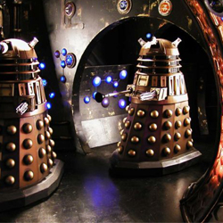

| Home | The Doctors | The Companions | The Villains |
| [banner] | |||
| cf
The DaleksThe Daleks were created by the Kaled scientist, Davros as travel machines. He had deduced that the years of radiation and chemical poisoning from an ongoing war would lead his race to mutate into immobile organisms.The Dalek travel machines would house these creatures and allow the Kaleds to survive. However, in the course of his experiments, Davros deliberately removed what he considered to be debilitating emotions from the mutants and a force of evil was spawned! The Daleks were born without any ability to feel compassion or pity and were motivated only by hate, fear and an implacable belief that they were the superior creatures in the Universe. |